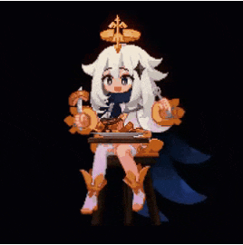

<!DOCTYPE html>
<!-- подключение словаря,RDFa -->
<html lang="en" xmlns:dc="http://purl.org/dc/elements/1.1/" xmlns:xsd="http://www.w3.org/2001/XMLSchema"></html>
<head>
    <meta charset="utf-8">
    <title>GenshinImpactFAN</title>
    <link href="Styles.css" rel="stylesheet">
    <link rel="shortcut icon" href="images/Emblem_Serenitea_Pot.png" type="image/png">
</head>
<!-- словарь, который по умолчанию будет использоваться в аннотациях,RDFa -->
<!-- Так же использую микроформат hCard-->
<body class="vcard" vocab="http://schema.org/">
    <header role="banner">
        <div></div>
        <!-- название организации, микроформат hCard -->
        <div><span class="fn org" style="margin-right: 30px;">GenshinImpactFAN</span></div>
        <div></div>
    </header>
    <!-- Навигационное меню-->
    <nav class="menu">
        <a rel="foaf:topic" class="main" href="home.html"><li>Главная</li></a>
        <a rel="foaf:topic" class="table" href="table.html"><li>Таблица</li></a>
        <a rel="foaf:topic" class="about" href="about.html"><li>Об авторе</li></a>
    </nav>
    <!-- основное содержимое -->
    <article class="content">
        <h1 style="text-align: center;">Информация о сайте</h1>
        <!-- Текстовое наполнение -->
        <!-- property="image" - указывает на свойства, RDFa стандарт -->
        <p style="text-align:justify;">&emsp;<span property="name"><ins>GenshinImpactFAN</ins></span> – информационный ресурс, посвященный современной многопользовательской онлайн игре <i>Genshin Impact</i>. Я стараюсь <i><sup>первым</sup></i> представить важную информацию о новинках, анонсах, датах выхода и этапах тестирования новых персонажей и локаций.
        У меня вы найдете полезные сервисы, в том числе расписание и релизы новых персонажей, информационную базу по артефактам, персонажам и талантам, интересные мифы и другая информация. Оставайтесь со мной, развивайтесь со мной, <del>будьте в курсе</del>!</p>
    </article>
    <footer class="wrap_footer">
        <!-- Автор-->
        <p class="footer-block">© <span property="dc:creator">Отчик Владислав</span></p>
        <!-- Создание сайта-->
        <p><span property="dc:date">22 октября 2021</span></p>
        <!-- Версия сайта -->
        <p class="footer-block">Version: 2.0</p>
    </footer>
</body>
</html>